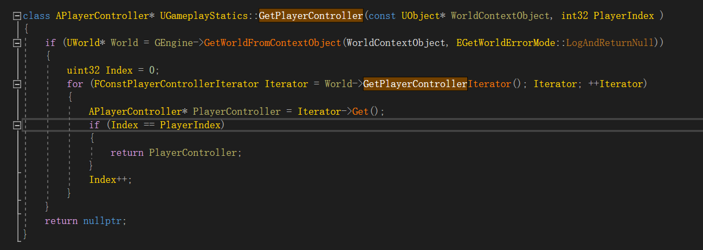

# API 不正常工作 之 GetPlayerController
前言：API 不正常工作大多原因都是咱自己用错了，或者不理解。一般不会是引擎的 bug
# GameInstance、LevelBP 的 BeginPlay 函数中调用 UGameplayStatics 的 GetPlayerController 函数返回 nullptr
惯例先放 UGameplayStatics::GetPlayerController 的实现

# 产生原因：
- 服务端的 World 中的 PlayerControllerList 是空的，所以 for 循环将直接退出，最终导致 nullptr
# 衍生问题：为什么服务端的 World 中的 PlayerControllerList 是空的呢？
- 首先，我调用这个函数是在 LevelScriptBlueprint 的 BeginPlay 里面的。调用 BeginPlay 函数的时候，还没有客户端连接，所以没有 PlayerController。
- 如果，在客户端连接后，具体来说是 GameMode 的 PostLogin 函数调用完后，再调用 UGameplayStatics::GetPlayerController，那就可以获得所有连接上服务器的 PlayerController 的 Authority 版本
# 衍生问题：为什么客户端在 BeginPlay 里面，World 的 PlayerControllerList 就不是空的呢
- 因为 Actor 的初始化是在 BeginPlay 函数调用之前执行的，所以执行 BeginPlay 的时候有 PlayerControllerList，引擎启动的主要流程可以去看我的这篇博客
# 衍生问题：服务器要怎么获得 PlayerController？
- 直接用 UGameplayStatics::GetPlayerController，但只能在客户端全部连接完后才能用。因为客户端没有连接之前，服务器是没有 PlayerController 的，而且 PlayerController 也不应该在服务器中凭空出现。
# 解决办法：
- 如果一定要在服务端调用 GetPlayerController，可以重载 GameMode::PostLogin () 函数，重载记得加上 Super::PostLogin ()；
- 如果不需要在服务端调用 GetPlayerController，例如：我只需要在 LevelScriptBlueprint 的 BeginPlay 中 为所有的 Player 生成一个特效，那就可以直接用 if 判空 筛掉 server 中 get 到的 nullptr 即可。